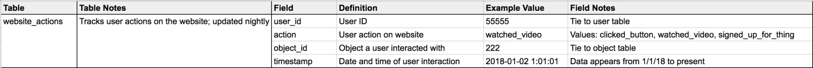

16 Managing and publishing data
16.1 Reading
16.2 The first rule of data management
Do not edit your data.
16.3 Documentation
- Many social science fields have a tradition of writing codebooks for their data
- Stanford Open Policing codebook
- “Codebook-like summary” of the
covdatapackage, automatically generated usingskimr - Caitlin Hudon’s approach (Hudon 2018)
- Table and field name, both verbatim
- Field example value
- Notes for both table and field
(ref:Hudson-tbl) Example of Caitlin Hudon’s approach to building a data dictionary. Source: https://caitlinhudon.com/2018/10/30/data-dictionaries/
16.4 Questions a codebook should answer
- What does this field mean? How should I use it?
- What is the data [journey]?
- Where does this data come from?
- How exactly is it collected?
- How often is it updated?
- Where does it go next?
- What does the data in this field actually look like?
- Are there any caveats to keep in mind when using this data?
- Where can I go for more information?
16.5 Major codebook elements
(https://afit-r.github.io/codebook)
- Original source of the data
- Sampling information
- Where and how the data were generated
- Variable-level metadata and summaries
- Structure of the data
16.6 Data management plans
- Much like a research plan, data management plans provide an overview of the steps you’ll take to gather, publish, and maintain your data
- Since 2011, NSF has required a 2-page data management plan for most types of proposals
- Examples and resources
16.7 Data management plan: Common elements
- Who is responsible for data management
- Who else will have access to which data
- How data will be collected
- Data formatting standards
- Whether and how data will be archived and made available for reuse
16.8 FAIR principles for published data
- Findable
- F1. (meta)data are assigned a globally unique and persistent identifier
- F2. data are described with rich metadata (defined by R1 below)
- F3. metadata clearly and explicitly include the identifier of the data it describes
- F4. (meta)data are registered or indexed in a searchable resource
- Accessible
- A1. (meta)data are retrievable by their identifier using a standardized communications protocol
- A1.1 the protocol is open, free, and universally implementable
- A1.2 the protocol allows for an authentication and authorization procedure, where necessary
- A2. metadata are accessible, even when the data are no longer available
- A1. (meta)data are retrievable by their identifier using a standardized communications protocol
- Interoperable
- I1. (meta)data use a formal, accessible, shared, and broadly applicable language for knowledge representation.
- I2. (meta)data use vocabularies that follow FAIR principles
- I3. (meta)data include qualified references to other (meta)data
- Reusable
- R1. meta(data) are richly described with a plurality of accurate and relevant attributes
- R1.1. (meta)data are released with a clear and accessible data usage license
- R1.2. (meta)data are associated with detailed provenance
- R1.3. (meta)data meet domain-relevant community standards
- R1. meta(data) are richly described with a plurality of accurate and relevant attributes